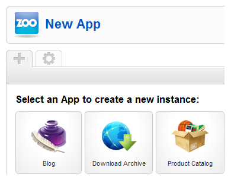
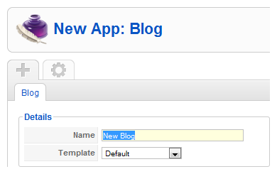

Create a new app instance
This is a short tutorial on how to create an app instance in the ZOO extension. Create an instance of one of the predefined apps, like the blog app, the download app or any other app.

Select app
If this is the first instance you create in ZOO, you will be automatically directed to the app creation site when you click on Extensions » ZOO in your Joomla administration. If you already have an app instance, you have to click on the plus icon in the tab bar of the ZOO and select an app to create.

Configuration
The configuration screen of the app instance will appear. First of all you have to give the app instance a name.

Global Parameters
On the right you can set global parameters for the app instance; like how many items you want to show per page, in how many columns the items should be displayed and how the teaser images should be aligned. These settings can be set for the frontpage, the categories and the items individually.
For the comment system we made a {doc: create-and-manage-comments text:separate tutorial}.